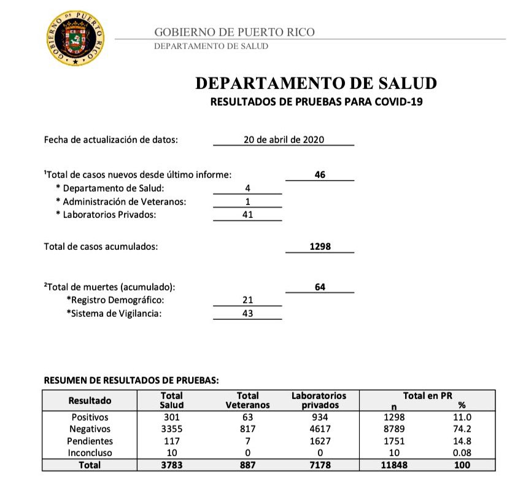

Dates for Puerto Rico values one day ahead of official bulletins
Issue number 252
sacundim opened this issue on April 21, 2020 at 5:00 pm
Labels Data source Feature Request stale
Puerto Rico’s Department of Health has been most days reporting new daily figures each morning in a bulletin that labels the data as being as of the previous day. But your website is instead reporting the same figures as of the day that the scraper picks them up, leading to an off-by-one day discrepancy between your data set and other sources that show Puerto Rico data, which I’ve seen has confused a few people.
I think there’s nothing wrong with your website’s semantics, it’s just different, but I’ve seen this detail confuse a handful of people already and thus see this as a reasonable choice but one that ought to be documented.
Concrete example: here’s an excerpt from the Puerto Rico Department of Health’s most recent morning bulletin:

This bulletin was published on the morning of April 21, but it says that as of April 20 (“Fecha de actualización de datos,” i.e., date of data update) there were, cumulatively:
- 1,298 cases
- 64 deaths
- 8,789 negative results
- 1,751 pending results
- 10 inconclusive results
The COVID Tracking Project data set is picking up these figures, but attributing them to April 21, the date that your scraper picks up the new numbers.
This issue has been automatically marked as stale because it has not had recent activity. It will be closed if no further activity occurs. Thank you for your contributions!
This issue has been closed because it was stale for 15 days, and there was no further activity on it for 10 days. You can feel free to re-open it if the issue is important, and label it as “not stale.”
Thank you for this feedback @sacundim
We understand how it could be confusing. The data we capture on a given day from the state might reflect the numbers for the previous day. We keep track of the “as of” timestamp of each data point, but it seems like it is not included in all API endpoints.
We are planning to make the time of the state update available in the daily states endpoint. Due to differences in state reporting, we do not always know exactly for which date the data is, in which case we might report when the state updated it.